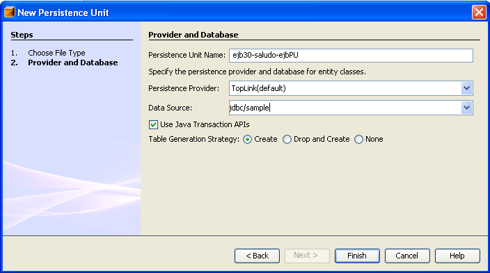
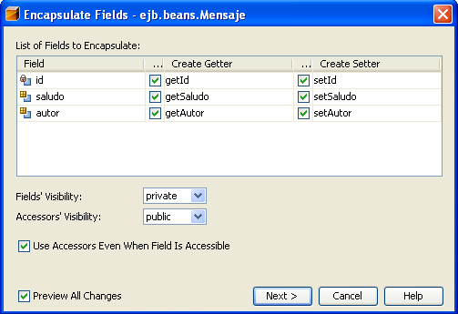
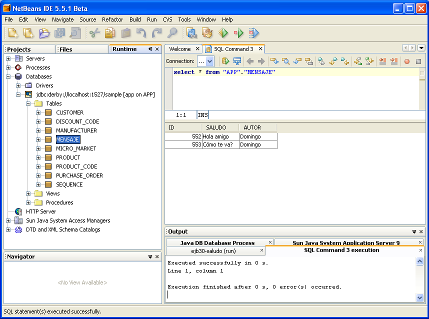

Introducción a Enterprise Java Persistence Api
Vamos a continuar con el proyecto anterior ejb30-saludo, añadiéndole el bean de entidad Mensaje que nos permite hacer persistentes los mensajes que la aplicación va a mostrar.
Creación de una unidad de persistencia
Necesitamos una unidad de persistencia (persistence unit), un descriptor XML que proporciona las características de la base de datos que vamos a usar.
1. Pulsa el botón derecho sobre el proyecto ejb30-saludo-ebj y selecciona la opción "New > File/Folder...".
2. Selecciona "Persistence > Persistence Unit"
3. Selecciona como proveedor de persistencia: "TopLink(default)" y como fuente de datos: "jdbc/sample" (una fuente de datos ya creada en el servidor de aplicaciones).
4. Activa el uso de transacciones y la opción "Create" como estrategia de generación de tablas, de forma que las tablas basadas en nuestro bean de entidad se creen cuando la aplicación se despliegue.

Cuando pulses "Finish", NetBeans crea el fichero persistence.xml en el directorio "Configuration Files" del proyecto EJB y lo abre en el editor. Ciérralo.
Creación de la entidad Mensaje
Vamos a crear una clase entidad Mensaje. Una clase entidad es clase Java a la que ñadiremos la anotación @Entity. Las clases entidad funcionan como clases normales, definiendo un conjunto de setters y getters para sus campos. Los campos se relacionan automáticamente con las columnas de una tabla que se llama igual que el nombre de la clase.
Cada clase entidad debe tener una clave primaria, declarada con la anotación @Id. También es posible utilizar la anotación @Generated para indicar que la clave primaria debe ser generada automáticamente.
Para crear la clase Mensaje haz lo siguiente:
1. Pulsa en el botón derecho sobre el proyecto EJB y selecciona la opción "New > Entity Class...". Escribe Mensaje como nombre, y el paquete ejb.beans. Deja el tipo de la clase primaria como Long.
2. Añade las siguientes declaraciones, después de la declaración de la clave primaria Id:
String saludo; String autor;
3. Pulsa con el botón derecho en el editor y selecciona la opción "Refactor > Encapsulate Fields...". Activa todos los métodos y se generarán automáticamente los setters y getters:

Con esto ya has añadido la clase que define una entidad persistente. Esta clase la vamos a poder usar en cualquier enterprise bean de sesión que haga de capa de negocio.
Uso del objeto de entidad
Vamos ahora a definir un conjunto de métodos que accedan a esta entidad en el enterprise bean Saludo.
En JPA todas las operaciones sobre las entidades se realizan a través de un objeto de la clase EntityManager, que se obtiene utilizando la inyección de recursos proporcionada por el servidor de aplicaciones.
1. Añade la siguiente declaración en la clase SaludoBean:
@PersistenceContext(name="ejb30-saludo-ejbPU") private EntityManager em;
Con ella estás indicando al servidor de aplicaciones que el encargado de proporcionar un EntityManager es la unidad de persistencia que acabamos de crear, llamada "ejb30-saludo-ejbPU".
Una vez definido el gestor de entidades, ya es posible utilizarlo para añadir, consultar y borrar entidades. Antes de ver el código concreto que hay que añadir, vamos a comentar rápidamente cómo hacer estas operaciones.
Operaciones sobre entidades
Haciendo persistente una entidad
Para hacer persistente una entidad hay que crear un objeto de la clase de la entidad, modificarlo y después llamar al método persist del EntityManager:
Mensaje mens = new Mensaje();
mens.setSaludo("Hola, qué tal");
em.persist(emp);
Obteniendo una entidad
Una vez que la entidad está en la base de datos, podemos obtenerla buscándola por su identificador:
Mensaje mens = em.find(Mensaje.class, 138);
El objeto que obtenemos es un objeto gestionado (managed object) por el gestor de persistencia.
Si no existe ningún objeto con ese identificador se devuelve null.
Modificando una entidad
Si hemos obtenido una entidad utilizando el método find, basta actualizar sus campos para que esta actualización se propage a la base de datos:
Mensaje mens = em.find(Mensaje.class, 138);
mens.setSaludo("Este es un nuevo saludo");
Eliminando una entidad
Eliminar una entidad es equivalente a hacer un DELETE en la tabla de la base de datos. Para ello basta con obtener la entidad que deseamos eliminar y pasársela como parámetro al método remove del gestor de entidades:
Mensaje mens = em.find(Mensaje.class, 138); em.remove(mens);
Consultas
Es posible realizar consultas SQL utilizando el método createQuery del gestor de entidades. El resultado de ese método es un objeto de tipo Query. Una vez obtenida la query, podemos ejecutarla con el método getResultList que devuelve una colección:
Query query = em.createQuery("SELECT e FROM Mensaje e");
Collection<Mensaje> listaMensajes =
(Collection<Mensaje>) query.getResultList();
Modificación del bean de sesión
Vamos a implementar ahora en el bean de sesión Saludo los métodos de negocio que acceden a la clase persistente Mensaje, utilizando el entity manager que hemos declarado en el paso 1.
2. Añadimos los siguientes métodos a las interfaces locales y remotas SaludoLocal y SaludoRemote:
public void addSaludo(String saludo, String autor);
void delSaludo(Long id);
3. Implementamos los métodos y algunos métodos privados en la implementación de las interfaces, en la clase SaludoBean:
public void addSaludo(String saludo, String autor) {
Mensaje mens = new Mensaje();
mens.setSaludo(saludo);
mens.setAutor(autor);
em.persist(mens);
}
public void delSaludo(Long id) {
Mensaje mens = this.getMensaje(id);
if (mens != null) {
em.remove(mens);
}
}
private Collection<Mensaje> getAllMensajes() {
Query query = em.createQuery("SELECT e FROM Mensaje e");
Collection<Mensaje> saludos = query.getResultList();
return saludos;
}
private Mensaje getMensaje(Long id) {
return em.find(Mensaje.class, id);
}
4. Por último, modificamos el método saluda() para que devuelva los datos de un saludo al azar de la tabla usando el método privado anterior getAllMensajes:
public String saluda() {
String saludo = "";
Collection<Mensaje> saludos = this.getAllMensajes();
if (saludos.size() > 0) {
int random = (int) (Math.random() * saludos.size());
Mensaje[] arrayMensajes = (Mensaje[])saludos.
toArray(new Mensaje[saludos.size()]);
Mensaje mens = arrayMensajes[random];
saludo = Long.toString(mens.getId()) + " " +
mens.getSaludo() + " [" + mens.getAutor() + "]";
}
return saludo;
}
Modificación del cliente
Para terminar, vamos a modificar la aplicación cliente para llamar a los nuevos métodos del enterprise bean. En concreto, vamos a añadir un nuevo campo de texto (tfMens) que colocaremos en la parte superior de la ventana. Para reutilizar la interfaz y no preocuparnos demasiado de su implementación contemplaremos las siguientes condiciones:
- Si ambos campos tfMens y tf están vacíos, llamaremos al método getSaludo para obtener un saludo del enterprise bean.
- Si el nuevo campo está lleno (el antiguo puede estarlo o no), consideraremos que queremos añadir un nuevo saludo y llamaremos al método addSaludo
- Si el nuevo campo tfMens está vacío, consideraremos que lo que hay en el otro campo es el identificador de un mensaje que hay que borrar. Lo borraremos convirtiendo el mensaje a Long y llamando al método delSaludo del enterprise bean.
Las modificaciones son muy sencillas:
1. Declaramos el nuevo campo JTextField
public class Main extends JPanel {
@EJB
static SaludoRemote saludo;
protected JTextField tf;
protected JTextField tfMens;
...
2. Lo añadimos en el correspondiente de la interfaz de usuario:
public Main() {
JPanel entryPanel = new JPanel(new BorderLayout());
tfMens = new JTextField("", 20);
entryPanel.add(tfMens,BorderLayout.PAGE_START);
tf = new JTextField("", 20);
...
3. Y modificamos el manejador del evento para considerar los casos comentados anteriormente:
class EnterListener implements ActionListener {
public void actionPerformed(ActionEvent e) {
try {
String autor = tf.getText();
String nuevoSaludo = tfMens.getText();
tfMens.setText("");
tf.setText("");
if (nuevoSaludo.equals("")
&& autor.equals("")) {
textArea.append(saludo.saluda()+"\n");
} else if (nuevoSaludo.equals("")) {
saludo.delSaludo(Long.parseLong(autor));
} else saludo.addSaludo(nuevoSaludo,autor);
} catch (Exception ex) {
textArea.append("Caught an unexpected exception!\n");
textArea.append(ex.toString());
}
}
}
Prueba del ejemplo
1. Prueba el ejemplo completo desplegando el proyecto EAR y lanzando el enlace directo a la aplicación cliente creado en la sesión anterior. Prueba a añadir algunos saludos y a mostrarlos.
Puedes probar que los nuevos saludos se han añadido en la base de datos. Para ello:
2. Pincha en la pestaña "Runtime" y abre la entrada "Databases". Activa la conexión a la BD pinchando con el botón derecho y seleccionando "Connect...". Introduce el usuario y contraseña: "app".
3. Puedes consultar la base de datos desplegando la conexión y consultando sus elementos (tablas, vistas y procedimientos). Pulsando sobre el botón derecho sobre la tabla "MENSAJE", puedes seleccionar la opción "View Data...". Se realiza una consulta sobre la tabla y se muestran los resultados:
